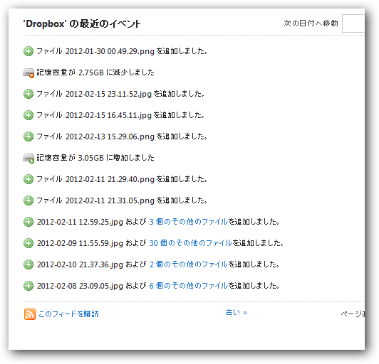

βテストに協力したのに、 Dropbox の記憶容量が減りました。
公開日：
オンラインストレージ大手米Dropboxが、新機能のベータテスト参加者に対して最大で5GBを無償提供すると発表した。Dropboxでは公式掲示板にこのキャンペーンに関する詳細FAQも掲載している。
というわけで、最近はiPhone/Nikon D300sでとった写真を開発版クライアントで Dropbox へアップロードしていた。普通の使い方をしていたので、そんなに容量は増えていないけれど、それでも500MBのボーナスを貰って、3.0GBまで容量が増えていた。
しかし、今日画像をアップロードしたところ......

何故か減りました （＠＠；
まぁ、タダでもらってるものだし、別に構わないのだけど......最初は笑ってしまったｗ バルーン通知のスクリーンショットがとれなかったのは痛恨の極み。